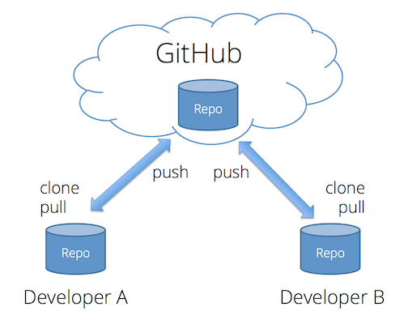

Workshop 2: Notes
Focus of Workshop 2 is writing a manuscript using RStudio and Quarto. Quarto makes writing a manuscript easy compared to MS Word and Google Doc. Open Science principles of transparency, reproducibility, and collaboration are inherent in the workflow we’ll demonstrate today. Similar workflow allows for development of any text document, including lecture notes, CV, etc., as well as presentations that we will demonstrate in Workshop 3.
Will show you a manuscript-like document that I drafted to demonstrate the key features of Quarto, and especially those that facilitate manuscript writing.
Share RStudio window. Change Zoom level to optimize viewing for participants. Close unnecessary RStudio panes.
Best practices:
Create manuscript (or any other RStudio file) within an RStudio project (demonstrate). When working on that project, open using the project file (.Rproj).
Within project, create subfolders for different types of files: code, data, docs, out.
Key Quarto features
RStudio panes - View Quarto (.qmd) file and rendered doc simultaneously in RStudio.
Virtually unlimited flexibility in document layout. Each format type (e.g., html, pdf, docx) utilizes a default template, custom templates (“extensions”) can also be created (e.g., to reflect exact formatting requirements of a particular journal). See this link for an example. Given that many journals still require submission of .docx formatted manuscripts, output using default template will require minor tweaking. Show examples of the manuscript.qmd rendered to html, pdf, and docx formats.
manuscript.qmd: All sections typically included in a manuscript are present in rendered document (e.g., title, authors, affiliations, abstract, introduction, etc.).
How did I create the manuscript using Quarto? Easy, with very little manual formatting of text, references, tables, and figures.
What does the Quarto document look like in the source versus visual editors? Can write using either source or visual editor, will often switch between these editors.
RStudio/Quarto is just a fancy text editor, similar in many ways to writing in MS Word or Google Docs, except that RStudio has tools (Git, GitHub) that make workflow transparent, reproducible, and collaborative. Quarto reference guide is your friend.
Citations & References:
Quarto makes dealing with references simple (really!).
References cited in manuscript and listed in References section are all in a .bib file that you create when you start writing the manuscript. Can be created manually, e.g., by exporting references from Google Scholar as BibTex and copying contents of the exported text file into the .bib file. Quarto provides a much better option: demonstrate process of adding a citation to manuscript and the associated reference to .bib file.
Journal-specific formatting of citations/references is specified by .csl file. 8,500+ CSL definitions available in the CSL Project’s central repository or Zotero’s style repository. Other formatting options are available based on what information is included for each reference in the .bib file. For example, to create links from each reference to the on-line article, include DOI in .bib file (see Santini et al. (2018) in References section.
Lots of different ways to tweak citation structure. As example, see Feldman citation in Introduction section.
Figures, Tables, & More:
Created dataset with R script (\code\length_weight.R). For use in this manuscript, that dataset is read into the project using a code block embedded in manuscript (Methods and Materials section). That makes it available for creating tables, figures, retrieving key values using in-line code.
In-line code: Insert values directly from dataset or statistical analyses, ensures transparency and repeatability, avoids having to manually insert new values if dataset or analyses are updated. Example in first line of Methods and Materials section.
Tables: Can create tables directly from dataset. For example, see code block at the beginning of the Tables section. Lots of formatting options available to customize table.
Figures: Can be created by embedding figure files generated using stand-alone R scripts (and saved to a subdirectory of the directory that contains the manuscript .qmd file), or R scripts can be included in manuscript files as code blocks and figure embedded without having to reference a saved file. For example, see code block at beginning of Figures section. Figures can be placed immediately following code block or in a separate section. Cross-referencing of figures (and tables) is automatic.
Collaboration: RStudio Integration with Git/GitHub
git is free and open source version control software on your computer, allows you to version control files in a project (“repository”) in a highly structured way. GitHub is a commercial web-based platform that stores your version-controlled repositories in the cloud where they are available for real-time collaboration. Repositories can be private or public.
Collaborate on a project via the remote (cloud) repository:

Developer A (Roland) creates a new project on which he wishes to collaborate with Developer B (Jake). Jake clones the remote repo to his local computer. To collaborate, Roland makes a change to his local copy of the repo, pushes it to the remote repo, then Jake pulls the changes from the remote to his local repo. collaboratively develop the project by making changes locally pushing, etc., etc.
Git workflow:
Add: After making changes to one or more files, “add” the modified or new files to the staging area.
Commit: Move the files from the staging area to the local repo.
Push: Push the committed files from the local repo to the remote repo.
Pull: Pull any modified or new files (e.g., those created by collaborator) from the remote repo to your local repo.
Demonstrate using RStudio: Add text to Acknowledgements section, push, Jake pulls, adds additional text to same section, pushes, I pull.
Questions to resolve:
Share RStudio window or monitor window? The latter would allow sharing of other documents (e.g., html and .docx documents, demonstrate Google Scholar BibTex references).
How large to make text to make it visible to participants?